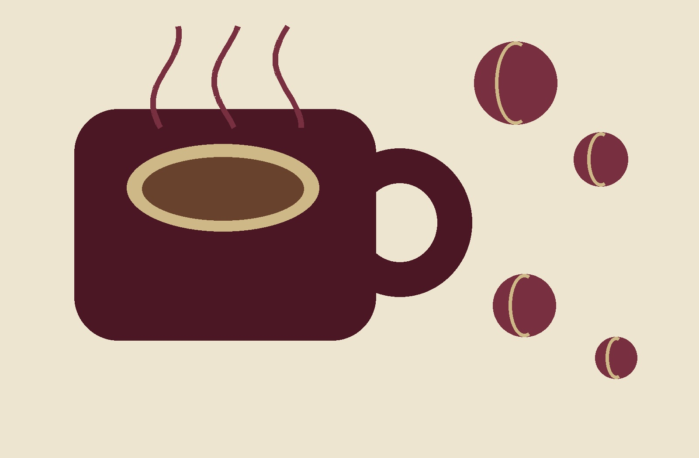
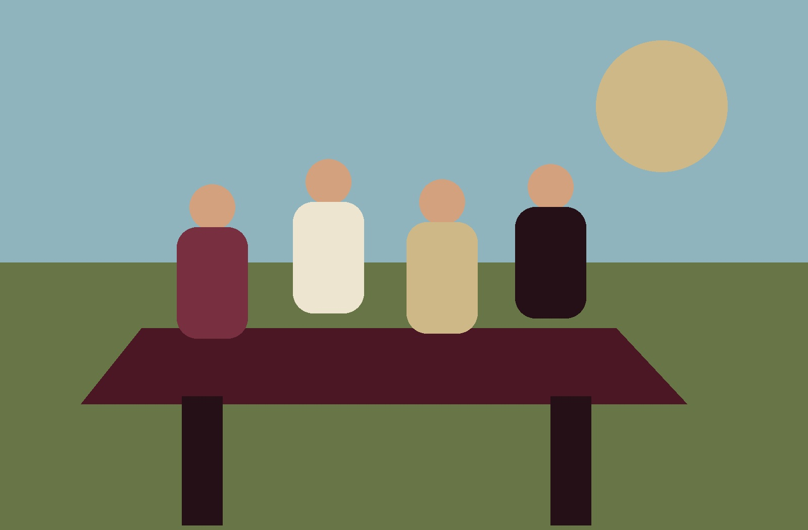
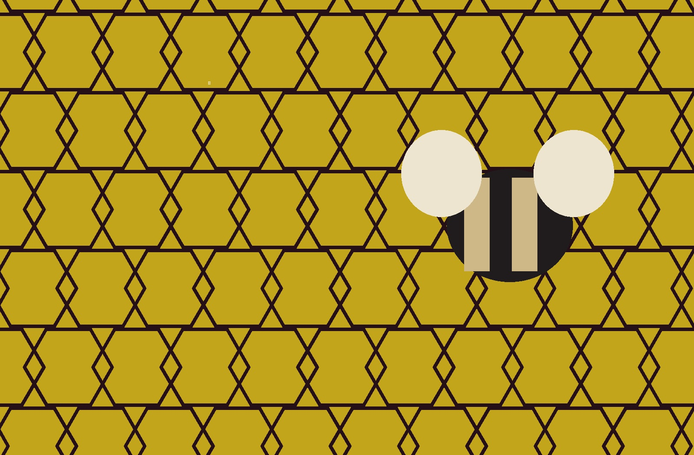
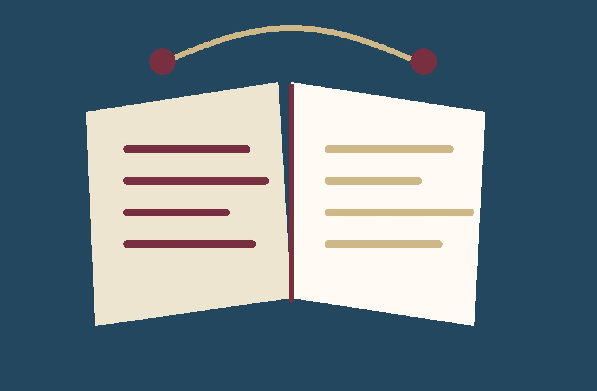
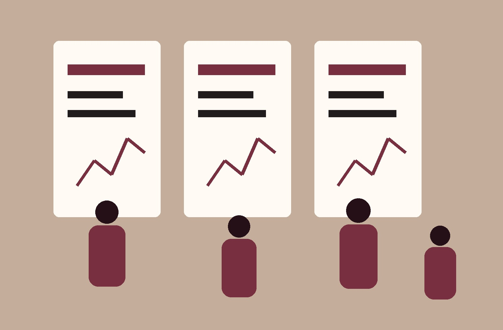

01Community · Recurring
GSC Coffee/Tea Hour
Come and relax in the student lounge with a cup of tea or coffee and meet other graduate students.
Initiatives & events
From informal coffee conversations to research presentations and undergraduate mentorship, GSC initiatives create places for mathematics students to meet, exchange ideas, and participate in the life of the department.
Explore the program

01Community · Recurring
Come and relax in the student lounge with a cup of tea or coffee and meet other graduate students.

02Community · Spring
Enjoy a picnic lunch and the amenities of the FSU Reservation with the graduate mathematics community.

03Competition · Mathematics
Undergraduate students are invited to test their integration skills for a chance to win cash prizes.
Representation · Student voice
Questions? Concerns? Suggestions? Come chat with us. The open forum creates a direct and informal route to the council.

05Mentorship · Academic initiative
The Directed Reading Program pairs graduate mathematics students with undergraduates interested in deeper mathematical study and research-style exploration.
It gives undergraduates a focused route into advanced topics while giving graduate students an opportunity to develop mentorship and mathematical communication experience.

06Research · Graduate scholarship
An opportunity for graduate students to present and share their research with the mathematics community.
Have an idea?
Events and initiatives evolve with the graduate community. Bring a proposal, suggest a format, or share a need that the council should consider.
Connect with the GSC